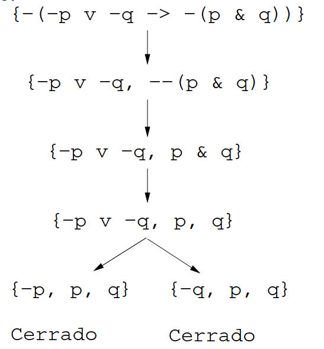
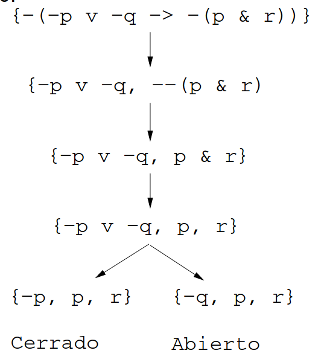
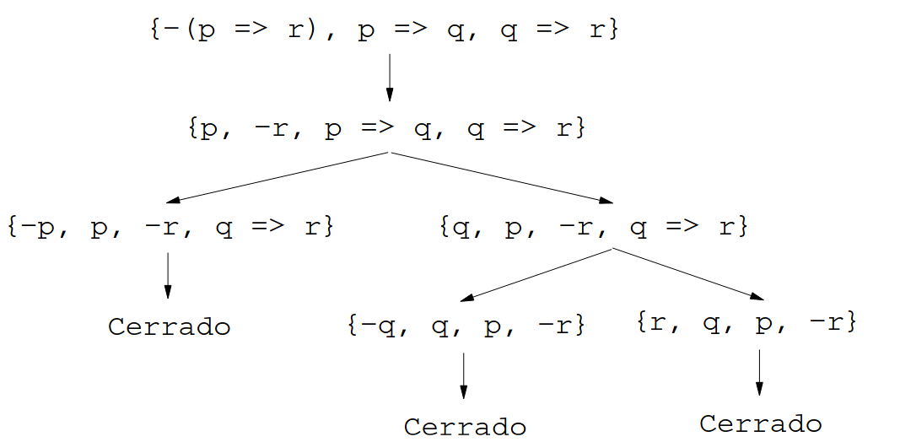

Tema 10: Formalización en Prolog de la lógica proposicional
Índice
- 1. Sintaxis de la lógica proposicional
- 2. Semántica de la lógica proposicional
- 2.1. Valores y funciones de verdad
- 2.2. Valor de una fórmula en una interpretación
- 2.3. Interpretaciones principales de una fórmula
- 2.4. Modelo de una fórmula
- 2.5. Cálculo de los modelos de una fórmula
- 2.6. Satisfacibilidad
- 2.7. Contramodelo de una fórmula
- 2.8. Fórmulas válidas (tautologías)
- 2.9. Interpretaciones principales de un conjunto de fórmulas
- 2.10. Modelo de un conjunto de fórmulas
- 2.11. Cálculo de modelos de conjuntos de fórmulas
- 2.12. Consistencia de un conjunto de fórmulas
- 2.13. Consecuencia lógica
- 2.14. El problema de los veraces y mentirosos
- 3. Tableros semánticos
- 4. Bibliografía
Nota: El código correspondiente a este capítulo se encuentra en logica_proposicional.pl.
1. Sintaxis de la lógica proposicional
- Alfabeto proposicional:
- símbolos proposicionales.
conectivas lógicas:
¬ negación ∧ conjunción ∨ disyunción → condicional ↔ equivalencia - símbolos auxiliares: "("` y ")".
- Fórmulas proposicionales:
- Los símbolos proposicionales son fórmulas
- Si F y G son fórmulas, entonces también lo son ¬ F, (F ∧ G), (F ∨ G), (F → G) y (F ↔ G).
- Eliminación de paréntesis:
- Eliminación de paréntesis externos.
- Precedencia: ¬, ∧, ∨ →, ↔
- Asociatividad: ∧ y ∨ asocian por la derecha
Sintaxis en Prolog
Usual ¬ ∧ ∨ → ↔ Prolog -&v=><=>Declaración de operadores:
:- op(610, fy, -). % negación :- op(620, xfy, &). % conjunción :- op(630, xfy, v). % disyunción :- op(640, xfy, =>). % condicional :- op(650, xfy, <=>). % equivalencia
2. Semántica de la lógica proposicional
2.1. Valores y funciones de verdad
2.1.1. Valores de verdad
- Valores de verdad:
- 1: verdadero y
- 0: falso
valor_de_verdad(?V)se verifica siVes un valor de verdad.valor_de_verdad(0). valor_de_verdad(1).
2.1.2. Funciones de verdad (negación)
Función de verdad de la negación:
i ¬i 1 0 0 1 función_de_verdad(+Op,+V1,-V)siOp(V1) = V.función_de_verdad(-, 1, 0). función_de_verdad(-, 0, 1).
2.1.3. Funciones de verdad de las conectivas binarias
Las funciones de verdad de las conectivas binarias son
i j i ∧ j i ∨ j i → j i ↔ j 1 1 1 1 1 1 1 0 0 1 0 0 0 1 0 1 1 0 0 0 0 0 1 1 función_de_verdad(+Op,+V1,+V2,-V)siOp(V1,V2)=V.función_de_verdad(v, 0, 0, 0) :- !. función_de_verdad(v, _, _, 1). función_de_verdad(&, 1, 1, 1) :- !. función_de_verdad(&, _, _, 0). función_de_verdad(=>, 1, 0, 0) :- !. función_de_verdad(=>, _, _, 1). función_de_verdad(<=>, X, X, 1) :- !. función_de_verdad(<=>, _, _, 0).
2.2. Valor de una fórmula en una interpretación
2.2.1. Representación de las interpretaciones
- Las interpretaciones son listas de pares de variables y valores de
verdad. Por ejemplo,
[(p,1),(r,0),(u,1)]es una interpretación.
2.2.2. Valor de una fórmula en una interpretación
valor(+F, +I, -V)se verifica si el valor de la fórmulaFen la interpretaciónIesV. Por ejemplo,?- valor((p v q) & (-q v r),[(p,1),(q,0),(r,1)],V). V = 1 ?- valor((p v q) & (-q v r),[(p,0),(q,0),(r,1)],V). V = 0
Su definición es
valor(F, I, V) :- memberchk((F,V), I). valor(-A, I, V) :- valor(A, I, VA), función_de_verdad(-, VA, V). valor(F, I, V) :- F =..[Op, A, B], valor(A, I, VA), valor(B, I, VB), función_de_verdad(Op, VA, VB, V).
2.3. Interpretaciones principales de una fórmula
2.3.1. Interpretaciones de una fórmula
- I es una interpretación principal de F si es una aplicación del conjunto de los símbolos proposicionales de F en el conjunto de los valores de verdad.
interpretaciones_fórmula(+F,-L)se verifica siLes el conjunto de las interpretaciones principales de la fórmulaF. Por ejemplo,?- interpretaciones_fórmula((p v q) & (-q v r),L). L = [[ (p, 0), (q, 0), (r, 0)], [ (p, 0), (q, 0), (r, 1)], [ (p, 0), (q, 1), (r, 0)], [ (p, 0), (q, 1), (r, 1)], [ (p, 1), (q, 0), (r, 0)], [ (p, 1), (q, 0), (r, 1)], [ (p, 1), (q, 1), (r, 0)], [ (p, 1), (q, 1), (r, 1)]]
Su definición es
interpretaciones_fórmula(F,U) :- findall(I,interpretación_fórmula(I,F),U).
interpretación_fórmula(?I,+F)se verifica siIes una interpretación de la fórmulaF. Por ejemplo,?- interpretación_fórmula(I,(p v q) & (-q v r)). I = [ (p, 0), (q, 0), (r, 0)] ; I = [ (p, 0), (q, 0), (r, 1)] ; I = [ (p, 0), (q, 1), (r, 0)] ; I = [ (p, 0), (q, 1), (r, 1)] ; I = [ (p, 1), (q, 0), (r, 0)] true.
Su definición es
interpretación_fórmula(I,F) :- símbolos_fórmula(F,U), interpretación_símbolos(U,I).
2.3.2. Símbolos de una fórmula
símbolos_fórmula(+F,?U)se verifica siUes el conjunto ordenado de los símbolos proposicionales de la fórmulaF. Por ejemplo,?- símbolos_fórmula((p v q) & (-q v r), U). U = [p, q, r]
Su definición es
símbolos_fórmula(F,U) :- símbolos_fórmula_aux(F,U1), sort(U1,U). símbolos_fórmula_aux(F,[F]) :- atom(F). símbolos_fórmula_aux(-F,U) :- símbolos_fórmula_aux(F,U). símbolos_fórmula_aux(F,U) :- F =.. [_Op,A,B], símbolos_fórmula_aux(A,UA), símbolos_fórmula_aux(B,UB), union(UA,UB,U).
2.3.3. Interpretación de una lista de símbolos
interpretación_símbolos(+L,-I)se verifica siIes una interpretación de la lista de símbolos proposicionalesL. Por ejemplo,?- interpretación_símbolos([p,q],I). I = [ (p, 0), (q, 0)] ; I = [ (p, 0), (q, 1)] ; I = [ (p, 1), (q, 0)] ; I = [ (p, 1), (q, 1)].
Su definición es
interpretación_símbolos([],[]). interpretación_símbolos([A|L],[(A,V)|IL]) :- valor_de_verdad(V), interpretación_símbolos(L,IL).
2.4. Modelo de una fórmula
es_modelo_fórmula(+I,+F)se verifica si la interpretaciónIes un modelo de la fórmulaF(es decir, si el valor de F en I es verdadero). Por ejemplo,?- es_modelo_fórmula([(p,1),(q,0),(r,1)], (p v q) & (-q v r)). true. ?- es_modelo_fórmula([(p,0),(q,0),(r,1)], (p v q) & (-q v r)). false.
Su definición es
es_modelo_fórmula(I,F) :- valor(F,I,V), V = 1.
2.5. Cálculo de los modelos de una fórmula
modelo_fórmula(?I,+F)se verifica siIes un modelo principal de la fórmulaF. Por ejemplo,?- modelo_fórmula(I,(p v q) & (-q v r)). I = [ (p, 0), (q, 1), (r, 1)] ; I = [ (p, 1), (q, 0), (r, 0)] ; I = [ (p, 1), (q, 0), (r, 1)] ; I = [ (p, 1), (q, 1), (r, 1)] ; false.
Su definición es
modelo_fórmula(I,F) :- interpretación_fórmula(I,F), es_modelo_fórmula(I,F).
modelos_fórmula(+F,-L)se verifica siLes el conjunto de los modelos principales de la fórmulaF. Por ejemplo,?- modelos_fórmula((p v q) & (-q v r),L). L = [[ (p, 0), (q, 1), (r, 1)], [ (p, 1), (q, 0), (r, 0)], [ (p, 1), (q, 0), (r, 1)], [ (p, 1), (q, 1), (r, 1)]]
Su definición es
modelos_fórmula(F,L) :- findall(I,modelo_fórmula(I,F),L).
2.6. Satisfacibilidad
es_satisfacible(+F)se verifica si la fórmulaFes satisfacible (es decir, si tiene modelos). Por ejemplo,?- es_satisfacible((p v q) & (-q v r)). true. ?- es_satisfacible((p & q) & (p => r) & (q => -r)). false.
Su definición es
es_satisfacible(F) :- interpretación_fórmula(I,F), es_modelo_fórmula(I,F).
2.7. Contramodelo de una fórmula
contramodelo_fórmula(?I,+F)se verifica siIes un contramodelo principal de la fórmulaF(es decir, siIes una interpretación principal de F que no es modelo de F). Por ejemplo,?- contramodelo_fórmula(I, p <=> q). I = [ (p, 0), (q, 1)] ; I = [ (p, 1), (q, 0)] ; false. ?- contramodelo_fórmula(I, p => p). false.
Su definición es
contramodelo_fórmula(I,F) :- interpretación_fórmula(I,F), not(es_modelo_fórmula(I,F)).
2.8. Fórmulas válidas (tautologías)
es_tautología(+F)se verifica si la fórmulaFes una tautología (es decir, si todas las interpretaciones son modelos de F). Por ejemplo,?- es_tautología((p => q) v (q => p)). true. ?- es_tautología(p => q). false.
Su definición es
es_tautología(F) :- not(contramodelo_fórmula(_I,F)).
Una definición alternativa es
es_tautología_alt(F) :- not(es_satisfacible(-F)).
2.9. Interpretaciones principales de un conjunto de fórmulas
- Una interpretación principal de un conjunto de fórmulas es una aplicación del conjunto de sus símbolos proposicionales en el conjunto de los valores de verdad.
interpretaciones_conjunto(+S,-L)se verifica siLes el conjunto de las interpretaciones principales del conjuntoS. Por ejemplo,?- interpretaciones_conjunto([p => q, q=> r],U). U = [[(p,0), (q,0), (r,0)], [(p,0), (q,0), (r,1)], [(p,0), (q,1), (r,0)], [(p,0), (q,1), (r,1)], [(p,1), (q,0), (r,0)], [(p,1), (q,0), (r,1)], [(p,1), (q,1), (r,0)], [(p,1), (q,1), (r,1)]]
Su definición es
interpretaciones_conjunto(S,U) :- findall(I,interpretación_conjunto(I,S),U).
interpretación_conjunto(?I,+S)se verifica siIes una interpretación del conjunto de fórmulasS. Por ejemplo,?- interpretación_conjunto(I,[p => q, q => p & q]). I = [ (p, 0), (q, 0)] ; I = [ (p, 0), (q, 1)] ; I = [ (p, 1), (q, 0)] ; I = [ (p, 1), (q, 1)] ; false.
Su definición es
interpretación_conjunto(I,S) :- símbolos_conjunto(S,U), interpretación_símbolos(U,I).
símbolos_conjunto(+S,?U)se verifica siUes el conjunto ordenado de los símbolos proposicionales del conjunto de fórmulasS. Por ejemplo,?- símbolos_conjunto([p => q, q=> r],U). U = [p, q, r]
Su definición es
símbolos_conjunto(S,U) :- símbolos_conjunto_aux(S,U1), sort(U1,U). símbolos_conjunto_aux([],[]). símbolos_conjunto_aux([F|S],U) :- símbolos_fórmula(F,U1), símbolos_conjunto_aux(S,U2), union(U1,U2,U).
2.10. Modelo de un conjunto de fórmulas
es_modelo_conjunto(+I,+S)se verifica si la interpretaciónIes un modelo del conjunto de fórmulasS(es decir, siIes modelo de todas las fórmulas deS). Por ejemplo,?- es_modelo_conjunto([(p,1),(q,0),(r,1)], [(p v q) & (-q v r),q => r]). true. ?- es_modelo_conjunto([(p,0),(q,1),(r,0)], [(p v q) & (-q v r),q => r]). false.
Su definición es
es_modelo_conjunto(_I,[]). es_modelo_conjunto(I,[F|S]) :- es_modelo_fórmula(I,F), es_modelo_conjunto(I,S).
2.11. Cálculo de modelos de conjuntos de fórmulas
modelo_conjunto(?I,+S)se verifica siIes un modelo principal del conjunto de fórmulasS. Por ejemplo,?- modelo_conjunto(I,[(p v q) & (-q v r),p => r]). I = [ (p, 0), (q, 1), (r, 1)] ; I = [ (p, 1), (q, 0), (r, 1)] ; I = [ (p, 1), (q, 1), (r, 1)] ; false.
Su definición es
modelo_conjunto(I,S) :- interpretación_conjunto(I,S), es_modelo_conjunto(I,S).
modelos_conjunto(+S,-L)se verifica siLes el conjunto de los modelos principales del conjunto de fórmulasS. Por ejemplo,?- modelos_conjunto([(p v q) & (-q v r),p => r],L). L = [[ (p, 0), (q, 1), (r, 1)], [ (p, 1), (q, 0), (r, 1)], [ (p, 1), (q, 1), (r, 1)]]
Su definición es
modelos_conjunto(S,L) :- findall(I,modelo_conjunto(I,S),L).
2.12. Consistencia de un conjunto de fórmulas
consistente(+S)se verifica si el conjunto de fórmulasSes consistente (es decir, tiene modelos). Por ejemplo,?- consistente([(p v q) & (-q v r),p => r]). true. ?- consistente([(p v q) & (-q v r),p => r, -r]). false.
Su definición es
consistente(S) :- modelo_conjunto(_I,S), !.
inconsistente(+S)se verifica si el conjunto de fórmulasSes inconsistente (es decir, no tiene modelos).inconsistente(S) :- not(modelo_conjunto(_I,S)).
2.13. Consecuencia lógica
es_consecuencia(+S,+F)se verifica si la fórmulaFes consecuencia del conjunto de fórmulasS(es decir, si todos los modelos deSson modelos deF). Por ejemplo,?- es_consecuencia([p => q, q => r], p => r). true. ?- es_consecuencia([p], p & q). false.
Su definición es
es_consecuencia(S,F) :- not(contramodelo_consecuencia(S,F,_I)).
contramodelo_consecuencia(+S,+F,?I)se verifica siIes una interpretación principal de \(~S~ ∪ \{~F~\}\) que es modelo del conjunto de fórmulasSpero no es modelo de la fórmulaF. Por ejemplo,?- contramodelo_consecuencia([p], p & q, I). I = [ (p, 1), (q, 0)] ; false. ?- contramodelo_consecuencia([p => q, q=> r], p => r, I). false.
Su definición es
contramodelo_consecuencia(S,F,I) :- interpretación_conjunto(I,[F|S]), es_modelo_conjunto(I,S), not(es_modelo_fórmula(I,F)).
Una definición alternativa de
es_consecuenciaeses_consecuencia_alt(S,F) :- inconsistente([-F|S]).
2.14. El problema de los veraces y mentirosos
Enunciado: En una isla hay dos tribus, la de los veraces (que siempre dicen la verdad) y la de los mentirosos (que siempre mienten). Un viajero se encuentra con tres isleños A, B y C y cada uno le dice una frase
- A dice "B y C son veraces syss C es veraz"
- B dice "Si A y B son veraces, entonces B y C son veraces y A es mentiroso"
- C dice "B es mentiroso syss A o B es veraz"
Determinar a qué tribu pertenecen A, B y C.
- Representación:
a,bycrepresentan que A, B y C son veraces \newline-a,-by-crepresentan que A, B y C son mentirosos
Las tribus se determinan a partir de los modelos del conjunto de fórmulas correspondientes a las tres frases.
?- modelos_conjunto([a <=> (b & c <=> c), b <=> (a & c => b & c & -a), c <=> (-b <=> a v b)], L). L = [[ (a, 1), (b, 1), (c, 0)]]
Por tanto, A y B son veraces y C es mentiroso.
3. Tableros semánticos
3.1. Demostraciones mediante tableros semánticos
- Demostración de fórmula válida:
¬ p ∨ ¬ q → ¬(p ∧ q) es válida
syss {¬(¬ p ∨ ¬ q → ¬(p ∧ q))} es inconsistente
syss {¬ p ∨ ¬ q, ¬¬(p ∧ q)} es inconsistente
syss {¬ p ∨ ¬ q, p ∧ q} es inconsistente
syss {p, q, ¬ p ∨ ¬ q} es inconsistente
syss {p, q, ¬ p} y \{p, q, ¬ q} son inconsistentes - Tablero semántico:
 - Demostración de fórmula no válida:
¬ p ∨ ¬ q → ¬(p ∧ r) es válida
syss {¬(¬ p ∨ ¬ q → ¬(p ∧ r))} es inconsistente
syss {¬ p ∨ ¬ q, ¬¬(p ∧ r)} es inconsistente
syss {¬ p ∨ ¬ q, p ∧ r} es inconsistente
syss {p, q, ¬ p ∨ ¬ r} es inconsistente
syss {p, q, ¬ p} y \{p, q, ¬ r} son inconsistentes - Tablero semántico:

3.2. Notación uniforme
3.2.1. Literales
- Los literales son los átomos y sus negaciones.
literal(+F)se verifica si la fórmulaFes un literal.literal(F) :- atom(F). literal(-F) :- atom(F).
3.2.2. Dobles negaciones
- La fórmula F es una doble negación si existe una fórmula G tal que F es de la forma ¬¬G.
- Si F es ¬¬G, entonces ⊨ F ↔ G.
3.2.3. Fórmulas alfa
Las fórmulas alfa, junto con sus componentes, son las siguientes
Fórmula 1ª componente 2ª componente A₁ ∧ A₂ A₁ A₂ ¬(A₁ → A₂) A₁ ¬A₂ ¬(A₁ ∨ A₂) ¬A₁ ¬A₂ - Si F es una fórmula alfa y sus componentes son F₁ y F₂, entonces ⊨ F ↔ F₁ ∧ F₂.
alfa(+A,-A1,-A2)se verifica siAes una fórmula alfa y sus componentes sonA1yA2.alfa(A1 & A2, A1, A2). alfa(-(A1 => A2), A1, -A2). alfa(-(A1 v A2), -A1, -A2).
3.2.4. Fórmulas beta
Las fórmulas beta, junto con sus componentes, son las siguientes:
Fórmula 1ª componente 2ª componente B₁ ∨ B₂ B₁ B₂ B₁ → B₂ ¬B₁ B₂ ¬(B₁ ∧ B₂) ¬B₁ ¬B₂ B₁ ↔ B₂ B₁ ∧ B₂ ¬B₁ ∧ ¬B₂ ¬(B₁ ↔ B₂) B₁ ∧ ¬ B₂ ¬B₁ ∧ B₂ - Si F es una fórmula beta y sus componentes son F₁ y F₂, entonces ⊨ F ↔ F₁ ∨ F₂.
beta(+B,-B1,-B2)se verifica siBes una fórmula beta y sus componentes sonB1yB2.beta(B1 v B2, B1, B2). beta(B1 => B2, -B1, B2). beta(-(B1 & B2), -B1, -B2). beta(B1 <=> B2, B1 & B2, -B1 & -B2). beta(-(B1 <=> B2), B1 & -B2, -B1 & B2).
3.3. Procedimiento de completación de tableros
- Un conjunto de fórmulas es cerrado si contiene una fórmula y su negación,
- Un conjunto de fórmulas es abierto si es un conjunto de literales que no contiene una fórmula y su negación.
- Construcción del tablero de un conjunto de fórmulas \(S\).
- (I) El árbol cuyo único nodo tiene como etiqueta S es un tablero de S.
- (C) Sea 𝑻 un tablero de S y S₁ la etiqueta de una hoja de 𝑻.
- (C.1) Si S₁ es cerrado, entonces el árbol obtenido añadiendo como
hijo de S₁ el nodo etiquetado con
cerradoes un tablero de S. - (C.2) Si S₁ es abierto, entonces el árbol obtenido añadiendo como
hijo de S₁ el nodo etiquetado con
abiertoes un tablero de S. - (C.3) Si S₁ contiene una doble negación ¬¬ F, entonces el árbol obtenido añadiendo como hijo de S₁ el nodo etiquetado con (S₁ - {¬¬F\}) ∪ {F} es un tablero de S.
- (C.4) Si S₁ contiene una fórmula alfa F de componentes F₁ y F₂, entonces el árbol obtenido añadiendo como hijo de S₁ el nodo etiquetado con (S₁ - {F}) ∪ {F₁,F₂} es un tablero de S.
- (C.5) Si S₁ contiene una fórmula beta F de componentes F₁ y F₂, entonces el árbol obtenido añadiendo como hijos de S₁ los nodos etiquetados con (S₁ - {F}) ∪ {F₁} y (S₁ - {F}) ∪ {F₂} es un tablero de S.
- (C.1) Si S₁ es cerrado, entonces el árbol obtenido añadiendo como
hijo de S₁ el nodo etiquetado con
- Un tablero semántico de S es completo si no se le puede aplicar ninguna de las reglas de expansión; es decir, todas sus hojas son abiertas o cerradas.
- Representación de tableros:
t(S,Izq,Dcha)representa el tablero de raízS, rama izquierdaIzqy rama derechaDcha. tablero_completo(+S,-Tab)se verifica siTabes un tablero completo del conjuntoS. Por ejemplo,?- tablero_completo([- (-p v -q => - (p & r))],T). T = t([- (-p v -q => - (p & r))], t([-p v -q, - -(p & r)], t([p & r, -p v -q], t([p, r, -p v -q], t([-p, p, r], cerrado, vacio), t([-q, p, r], abierto, vacio)), vacio), vacio), vacio) true.
Su definición es
tablero_completo(S,Tab) :- completación(t(S,_Izq,_Dcha),Tab).
completación(+Tab1,-Tab2)se verifica siTab2es una completación (i.e. un tablero completo) del tableroTab1.completación(t(Flas,Izq1,Dcha1),t(Flas,Izq3,Dcha3)) :- paso(t(Flas,Izq1,Dcha1),t(Flas,Izq2,Dcha2)), !, completación(Izq2,Izq3), completación(Dcha2,Dcha3). completación(Tab,Tab).
paso(+Tab1,-Tab2)se verifica siTab2es un tablero obtenido aplicando una regla de completación al tableroTab1.paso(t(S1,_,_),t(S1, cerrado, vacio)) :- % C1 cerrada(S1), !. paso(t(S1,_,_),t(S1, abierto, vacio)) :- % C2 lista_de_literales(S1), !. paso(t(S1,_,_),t(S1, Izq, vacio)) :- % C3 regla_doble_negacion(S1, S2), !, Izq = t(S2, _, _). paso(t(S1,_,_),t(S1, Izq, vacio)) :- % C4 regla_alfa(S1, S2), !, Izq = t(S2, _, _). paso(t(S1,_,_),t(S1, Izq, Dcha)) :- % C5 regla_beta(S1, S2, S3), Izq = t(S2, _, _), Dcha = t(S3, _, _).
cerrada(+S)se verifica siSes una lista cerrada (i.e. que contiene una fórmula y su negación).cerrada(S) :- member(-F,S), member(F,S).
lista_de_literales(+S)se verifica siSes una lista de literales.lista_de_literales([]). lista_de_literales([F|S]) :- literal(F), lista_de_literales(S).
regla_doble_negacion(+S1,-S2)se verifica siS1es una lista de fórmulas que contiene una doble negación--FyS2es la lista de fórmulas obtenidas sustituyendo enS1la fórmula--FporF. Por ejemplo,?- regla_doble_negacion([- -(q v r), p => r],L). L = [q v r, p => r] ?- regla_doble_negacion([p v (q v r), p => r],L). No
Su definición es
regla_doble_negacion(S1, [F|S2]) :- member(- -F, S1), !, delete(S1, - -F, S2).
regla_alfa(+S1,-S2)se verifica siS1es una lista de fórmulas que contiene una fórmula alfaAyS2es la lista de fórmulas obtenidas sustituyendo enS1la fórmulaApor sus componentes. Por ejemplo,?- regla_alfa([p & (q v r), p => r],L). L = [p, q v r, p => r] ?- regla_alfa([p v (q v r), p => r],L). true.
Su definición es
regla_alfa(S1, [A1,A2|S2]) :- member(A, S1), alfa(A, A1, A2), !, delete(S1, A, S2).
regla_beta(+S1,-S2,-S3)se verifica siS1es una lista de fórmulas que contiene al menos una fórmula betaByS2es la lista de fórmulas obtenidas sustituyendo enS1la fórmulaBpor una de sus componentes yS3, por la otra. Por ejemplo,?- regla_beta([p & (q v r), p => r],L1,L2). L1 = [-p, p & (q v r)] L2 = [r, p & (q v r)] ?- regla_beta([p & (q v r), -(p => r)],L1,L2). false.
Su definición es
regla_beta(S1, [B1|RS1], [B2|RS1]) :- member(B, S1), beta(B, B1, B2), delete(S1, B, RS1).
3.4. Tableros cerrados
es_cerrado(+Tab)se verifica siTabes un tablero cerrado (es decir, si todas sus hojas están etiquetadas concerradoovacio).es_cerrado(t(_,Izq,Dcha)) :- es_cerrado(Izq), es_cerrado(Dcha). es_cerrado(cerrado). es_cerrado(vacio).
3.5. Teorema por tableros
3.5.1. Prueba mediante tableros
prueba(+F,-Tab)se verifica siTabes una prueba de la fórmulaF(es decir, un tablero completo cerrado de {¬F}). Por ejemplo,?- prueba(-p v -q => -(p & q),T). T = t([- (-p v-q => - (p & q))], t([-p v-q, - -(p & q)], t([p & q, -p v -q], t([p, q, -p v -q], t([-p, p, q], cerrado, vacio), t([-q, p, q], cerrado, vacio)), vacio), vacio), vacio) ?- prueba(-p v -q => -p,T). false.
Su definición es
prueba(F,Tab) :- tablero_completo([-F],Tab), !, es_cerrado(Tab).
3.5.2. Teorema mediante tableros
es_teorema(+F)se verifica si la fórmulaFes teorema mediante tableros semánticos (es decir, F tiene una prueba mediante tableros). Por ejemplo,?- es_teorema(-p v -q => -(p & q)). true. ?- es_teorema(-p v -q => -(p & r)). false.
Su definición es
es_teorema(F) :- prueba(F,_Tab).
- El cálculo de tableros semánticos es adecuado y completo; es decir, una fórmula es válida syss es teorema mediante tableros semánticos.
3.6. Deducción por tableros
3.6.1. Deducción por tableros
prueba_deducible_tab(+S,+F,-Tab)se verifica siTabes una prueba por tableros semánticos de que la fórmulaFes deducible del conjunto de fórmulasS(es decir,Tabes un tablero completo cerrado de S ∪ {¬F}$. Por ejemplo,?- prueba_deducible_tab([p => q, q => r], p => r,T). T = t([- (p => r), p => q, q => r], t([p, -r, p => q, q => r], t([-p, p, -r, q => r], cerrado, vacio), t([q, p, -r, q => r], t([-q, q, p, -r], cerrado, vacio), t([r, q, p, -r], cerrado, vacio))), vacio) true. ?- prueba_deducible_tab([p => q, q => r], p <=> r,T). false.
Gráficamente,
 Su definición esprueba_deducible_tab(S,F,Tab) :- tablero_completo([-F|S],Tab), !, es_cerrado(Tab).
3.6.2. Deducibilidad por tableros
es_deducible_tab(+S,+F)se verifica si la fórmulaFes deducible (mediante tableros) del conjunto de fórmulasS.es_deducible_tab(S,F) :- prueba_deducible_tab(S,F,_Tab).
- La fórmula F es consecuencia de S syss F es deducible mediante tableros a partir de S.
4. Bibliografía
- J.A. Alonso y J. Borrego.
Deducción automática (Vol. 1: Construcción lógica de sistemas lógicos).
(Ed. Kronos, 2002).
- Cap. 3: Elementos de lógica proposicional.
- Cap. 4.1: Tableros semánticos.
- M. Ben-Ari.
Mathematical Logic for Computer Science (2nd ed.)
(Springer, 2001).
- Cap. 2: Propositional calculus: Formulas, models, tableaux.
- M. Fitting. First-order logic and automated theorem proving (2nd ed.) (Springer, 1995).
- A. Nerode y E.A. Shore. Logic for applications. (Springer, 1997)